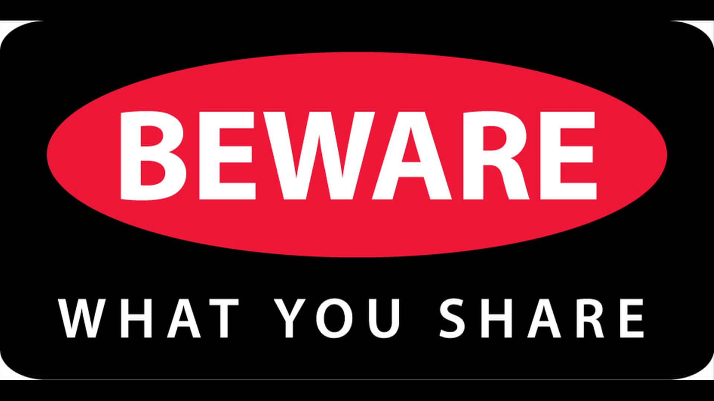
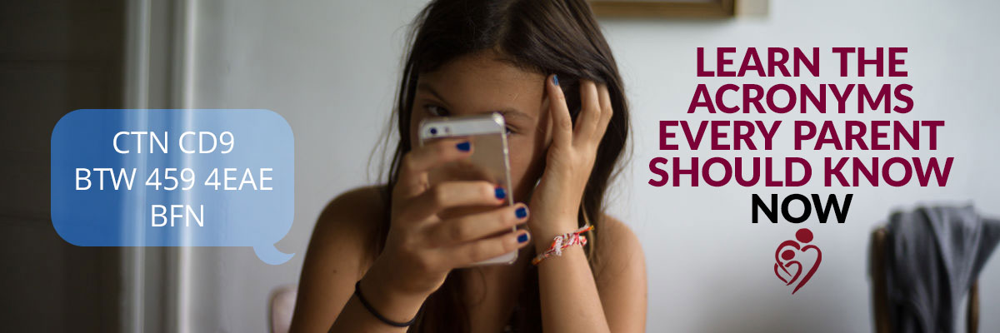

Tips & Advice
Check your mood! Are you feeling upset or angry? Then this is not the time to be messaging or posting on a social media site. People don't always make good decisions or think straight when they're stressed out or upset. If you have to, call someone or go for a run instead before you start venting online.
Passwords are private. Don’t share your password even with friends. It’s hard to imagine, but friendships change and you don’t want to be impersonated by anyone. Pick a password you can remember but no one else can guess. One trick: Create a sentence like “I graduated from King School in 15” for the password “IgfKSi15.” Make sure you have multiple passwords.
Be your own person. Don’t let friends or strangers pressure you to be someone you aren’t. And know your limits. You may be internet savvy, but people and relationships change, and unexpected stuff can happen on the internet.
Be nice online. Or at least treat people the way you’d want to be treated. People who are nasty and aggressive online are at greater risk of being bullied or harassed themselves. If someone’s mean to you, try not to react, definitely don’t retaliate, and talk to a trusted adult or a friend who can help. Use privacy tools to block the meanies.
Avoid in-person meetings. The only way someone can physically harm you is if you’re both in the same location, so – to be 100% safe – don’t meet them in person. If you really must get together with someone you “met” online, don’t go alone. Have the meeting in a public place, tell a parent or some other solid backup, and bring some friends along.
Read between the “lines.” It may be fun to check out new people for friendship or romance, but be aware that, while some people are nice, others act nice because they’re trying to get something. Flattering or supportive messages may be more about manipulation than friendship or romance. Be smart when using a smartphone. All the same tips apply with phones as with computers along with some extra precautions. Be careful who you give your number to and how you use GPS and other technologies that can pinpoint your physical location. Be sure to secure your phone with a PIN, password, fingerprint or facial recognition. And make sure you know how to log into the iCloud or Android Find my Device so you can remotely locate, ring or erase a lost or missing phone.
Don’t measure your own life based on what others post. People typically post happy photos and stories online and don’t usually share their boring or sad moments or unflattering photos. Don’t assume that others have better lives than you do, based on what they post. Free Game. Remember that any pictures or text messages that you send could become "leaked," or public, as soon as you hit send. Think about whether the words you've written or the pictures you're about to share are ones that you would want other people reading or seeing. It's always better to be safe than sorry. A good rule is that if you wouldn't want your grandmother to see it or read it, you probably shouldn't send it or post it.